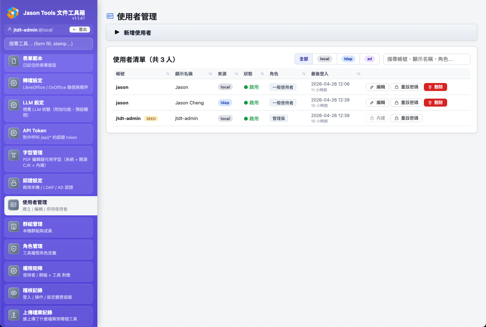
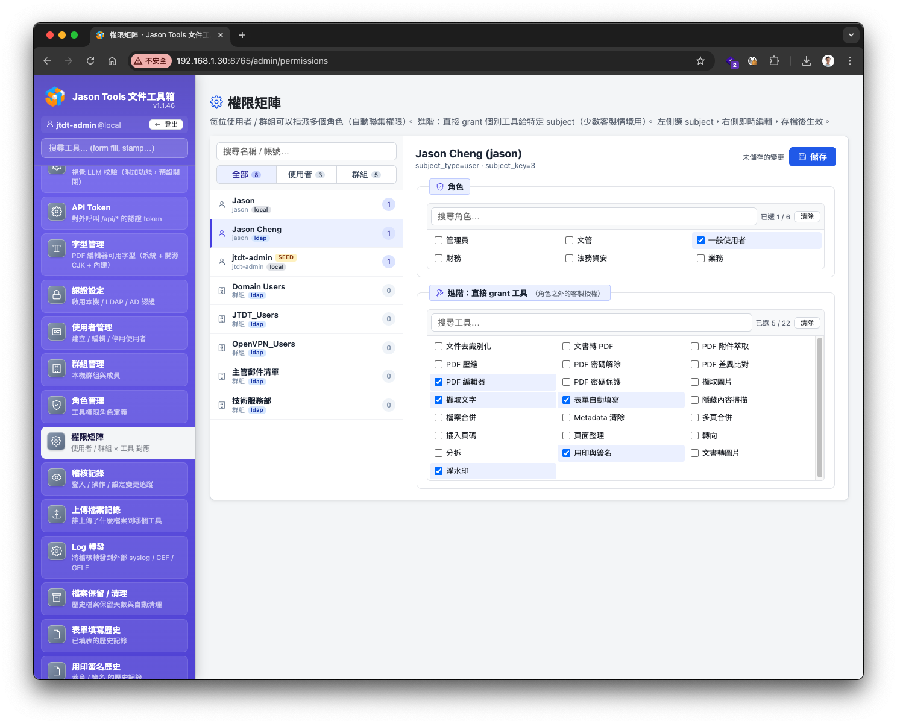
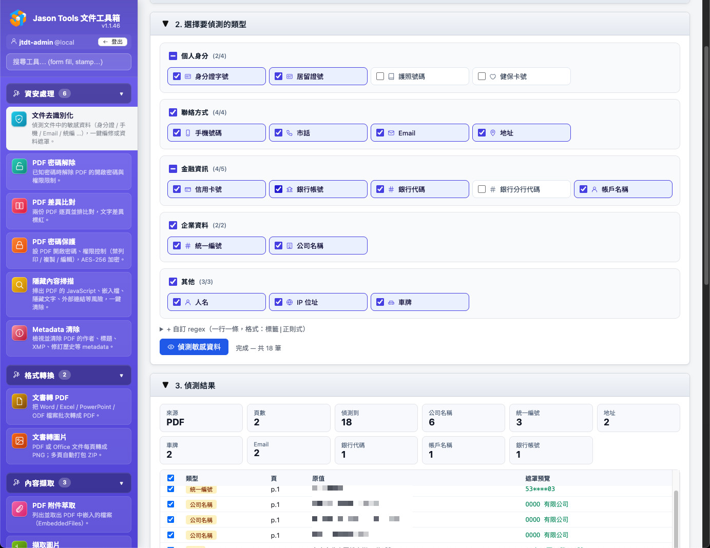

文件留在自己的伺服器
可以全地端部署：上傳的文件、處理結果與稽核記錄存放在你自己架設的伺服器上，不強制依賴任何雲端服務。AI 加值、GPU OCR、語音服務、通知與記錄轉送等整合預設關閉；啟用後，相關資料會送到管理員設定的服務。這讓組織比較容易符合個人資料保護、資訊安全與 AI 管理的要求。
個資法、GDPR、ISO/IEC 27001:2022、ISO/IEC 42001:2023 檢驗的是組織怎麼管理，不是某一套軟體，所以本工具不宣稱「通過」或「符合」任何認證。這一頁對照產品功能與部分法規、標準的要求，說明工具本身做到什麼，以及你的組織使用後還要做哪些事，作為建立制度與準備稽核的參考；它不是完整的合規清單，也不是法律意見。實際適用性與符合程度，仍取決於部署設定、使用情境與組織的管理措施。
找不到符合的項目。換個關鍵字，或用控制項編號（例如 A.8.15）、條號（例如 第 12 條）搜尋。
資料在哪裡
文件、處理結果與稽核記錄都在你自己的伺服器上處理與留存，不強制依賴雲端服務；啟用下方「會連到外部的情況」所列的整合時，相關資料會送到管理員設定的服務。
| 資料 | 存在哪裡、留多久 |
|---|---|
上傳的檔案與處理中的產出 | 存在哪裡、留多久 伺服器的資料目錄（ |
背景作業的結果 | 存在哪裡、留多久 資料目錄，24 小時；作業紀錄 30 天 |
我的工作區 | 存在哪裡、留多久 資料目錄（ |
表單填寫、用印簽名、浮水印的歷史檔案 | 存在哪裡、留多久 資料目錄，各 365 天；只有稽核員能查看 |
公文撰擬案件 | 存在哪裡、留多久 資料目錄（ |
會議錄音轉逐字稿上傳的原始錄音 | 存在哪裡、留多久 資料目錄（ |
公文知識庫 | 存在哪裡、留多久 資料目錄（ |
事務機掃描取件 | 存在哪裡、留多久 資料目錄的 |
從事務機掃描或取件的檔案 | 存在哪裡、留多久 存進操作者自己的工作區（依工作區的保留期限）；工作區停用或額度不足時留在暫存區 24 小時給本人下載。未啟用登入時只有一個工作區，所有人共用 |
加密紙本備份 | 存在哪裡、留多久 主機不存任何內容、金鑰或分片（加密與還原都在瀏覽器裡）；稽核記錄只有備份 ID、門檻與份數 |
帳號、權限與稽核記錄 | 存在哪裡、留多久 資料目錄的 |
設定 | 存在哪裡、留多久 資料目錄的設定檔；LLM、語音服務、單一登入與通知管道的金鑰與密碼加密存放，API Token 只存雜湊與加密後的值 |
資料目錄預設在 Linux 的 /var/lib/jt-doc-tools/data、Windows 的 C:\ProgramData\jt-doc-tools\Data、macOS 的 ~/Library/Application Support/jt-doc-tools/data，安裝時可以改。保留期限都可以在「檔案保留 / 清理」頁調整。期限屆滿的資料在下一次清理時刪除：上傳的檔案與作業結果每 30 分鐘清理一次，其他資料每 6 小時一次，也可以在該頁立即清理。
備份另計：帳號、稽核與事務機連線三個資料庫每天自動備份，保留 7 份；以 jtdt update 升級前，資料目錄（暫存檔、作業產出與統編資料庫除外）複製一份放在資料目錄旁，保留最近 3 份。原本的資料刪除後，這些備份裡的副本不會跟著刪除，依你的政策處理。
公文知識庫的文件由管理員刪除：原始檔、段落、關鍵字與向量索引一起刪除，資料庫檔案裡釋放的空間不另外抹除；用它產生過的公文案件會留著當時引用的段落，依案件的保留期限處理；稽核記錄留有文件標題。每一次查詢知識庫（公文撰擬參考知識庫、管理頁的檢索測試）寫入稽核記錄，只記查詢文字的長度，不記內容。
- 不需要任何雲端 AI 服務或 API 金鑰；AI 加值功能預設關閉。
- 網頁只連本站：內容安全政策（CSP）只允許本站的腳本、樣式與連線，不載入外部的字型、腳本或追蹤程式。
- Office 轉檔、PDF 處理、OCR、去識別化都在伺服器本機執行；OCR 可以另外選用自己架設的 GPU 伺服器。
- 原始碼公開（AGPL-3.0），用到的套件與授權列在
THIRD-PARTY-NOTICES.md。
會連到外部的情況
都跟你的文件內容無關，或由你自己決定。
| 情況 | 送出什麼 |
|---|---|
安裝、升級 | 送出什麼 從 GitHub、PyPI 等下載程式與套件，不送出你的資料 |
第一次使用 OCR | 送出什麼 從 GitHub 下載辨識模型，不送出你的資料 |
管理員下載資料：統編資料庫、OCR 語言包、公文範本與機關地址簿、政府公開法規 | 送出什麼 只下載，不送出你的資料；統編資料庫的排程更新預設關閉 |
管理員按「檢查 GitHub 最新版本」 | 送出什麼 讀取 GitHub 上最新的版本號 |
管理員啟用 LLM 加值 | 送出什麼 文件內容送到你指定的 LLM 伺服器；伺服器放在內網或外部由你決定 |
公文知識庫啟用語意檢索 | 送出什麼 匯入或重建索引時，文件切成的段落（每段最多約 800 字）送到嵌入模型服務；檢索時，查詢文字也送過去（公文撰擬參考知識庫時，是承辦人的需求或來文的開頭）。嵌入模型服務預設沿用公文撰擬的 LLM 伺服器，也可以另外設定，兩者不一定在同一台 |
使用者做事務機連線測試（事務機掃描取件） | 送出什麼 伺服器連到使用者輸入的內網事務機，讀取網頁首頁與掃描介面的能力表辨識型號；只連內部網路位址與網頁連接埠，HTTPS 要求 TLS 1.2 以上，不送任何帳密或 Cookie |
使用者從事務機掃描（事務機掃描取件） | 送出什麼 伺服器連到使用者有權使用的內網事務機（自己新增的，或管理員指定他為成員的共用事務機），透過 eSCL 送出掃描工作並取回掃描檔，存進該使用者的工作區；不送任何帳密或 Cookie；同一台一次只處理一件 |
使用者從機內信箱取件（事務機掃描取件，FUJIFILM 部分型號已實機驗證） | 送出什麼 伺服器用 WebDAV 連到使用者有權使用的 FUJIFILM 事務機，送出使用者這次輸入的信箱密碼或事務機帳密，列出並下載他選的文件，存進該使用者的工作區；預設只讀取，使用者勾選「取件並刪除」時，確認檔案存好之後才刪除設備上的原件；HTTPS 憑證要通過驗證或由使用者核對指紋，只用 HTTP 的設備要使用者同意；同一台一次只處理一件 |
使用者從檔案分享取件（事務機掃描取件，實驗功能） | 送出什麼 伺服器用 WebDAV 或 SMB 連到使用者有權使用的 Canon、Konica Minolta、SHARP 事務機，送出使用者這次輸入的帳密（Konica 是信箱編號與信箱密碼），列出並下載他選的檔案，存進該使用者的工作區；只讀取，不刪除、改名或寫入設備上的檔案；SMB 只用 NTLMv2、不接受 SMB1，內容不加密，要使用者同意；同一台一次只處理一件 |
使用者從文件伺服器或文件匣取件（事務機掃描取件；RICOH 部分型號已實機驗證，KYOCERA 與其他 RICOH 型號為實驗功能） | 送出什麼 伺服器用 SOAP 連到使用者有權使用的 RICOH 文件伺服器或 KYOCERA 文件匣，送出使用者這次輸入的帳號、User Code 或資料夾、文件匣密碼，列出並下載他選的文件，存進該使用者的工作區；只讀取，不刪除也不修改設備上的文件；同一台一次只處理一件 |
公文撰擬參考知識庫或過去的案件 | 送出什麼 承辦人的需求與整理後的資料，連同檢索到的參考段落（最多 6 段）或自己過去案件的內容，一起送到公文撰擬使用的 LLM 伺服器 |
設定 GPU OCR 伺服器或會議錄音的語音服務 | 送出什麼 頁面圖片或錄音送到那台伺服器；語音服務以 2 小時內有效的網址取回錄音，逐字稿存檔後通知對方刪除 |
開啟作業完成通知 | 送出什麼 工具名稱、檔名與完成狀態送到你設定的管道（Email、Slack、Teams 等），不含檔案內容 |
設定記錄轉送 | 送出什麼 稽核事件（帳號、時間、事件、檔名）送到你設定的 SIEM |
接上公司目錄或單一登入 | 送出什麼 登入時向你的 LDAP、Active Directory 或身分提供者驗證 |
通知與記錄轉送不含檔案內容，但檔名與帳號名稱本身可能含有個資或敏感資訊；設定前確認接收端的存取權限與保留期限。
工具本身做到的
這些是軟體內建的控制，裝好、設定好就有作用。每一張卡片列出對應的條文與控制項，以及驗證用的自動化測試。測試檔案說明怎麼驗證；目前版本的執行結果見 GitHub Actions 的 tests 工作流程。
存取控制
- 登入：本機帳號、LDAP、Active Directory、OIDC 與 SAML 單一登入，可加兩步驟驗證；連續登入失敗自動鎖定。
- 權限：以角色授權每一支工具，可以指派給個人、群組或 AD 組織單位。
- 隔離：一般使用者只能存取自己上傳的檔案、作業結果、工作區與公文案件，以編號猜測他人資料一律被拒。管理員可以開啟他人的上傳檔案、作業結果、公文案件與送件前檢核案件，每次都寫入稽核記錄；公文案件清單對管理員列出所有人的案件標題與主旨，查看時也寫入稽核記錄。他人工作區裡的檔案管理員也打不開，只看得到用量並可以清空。
- 職責分離：稽核員只能查看紀錄、不能使用工具；表單填寫、用印、浮水印的歷史檔案只有稽核員能查看。
如何驗證5
tests/test_authz_boundaries.py一般使用者打不開管理頁、用不了沒有權限的工具、讀不到別人的檔案tests/test_job_acl.py作業結果只有擁有者能下載tests/test_auth_local.py同一帳號或同一來源 IP 連續失敗時鎖定tests/test_user_manager.py停用帳號或重設密碼時登入立即失效tests/test_v1_4_99_audit_2fa.py兩步驟驗證與稽核員角色
稽核記錄
- 記什麼：登入、帳號與權限變更、設定變更、工具使用、下載成品；不記錄檔案內容。
- 管理員也留紀錄：管理員開啟他人的檔案、作業結果與案件，稽核員查看歷史檔案與送件前檢核案件，都會寫入稽核記錄（同一人對同一份資料 5 分鐘內記一筆）。
- 不提供修改功能：應用程式沒有修改或任意刪除稽核記錄的功能，只依保留期限清理。具有主機或資料庫權限的人仍可以直接修改檔案；需要防竄改時，把稽核記錄即時轉送到另一台主機的 SIEM 或不可覆寫的儲存。
- 轉送 SIEM：syslog（RFC 5424）、CEF、GELF，可以同時設定多個目的地。
如何驗證5
tests/test_download_and_api_audit.py下載成品寫入file_download，下載失敗的不算tests/test_admin_privacy_boundary.py管理員讀取他人檔案寫入admin_file_overridetests/test_auditor_readonly.py稽核員只能查看，不能刪除歷史檔案或觸發備份tests/test_audit_forward_per_destination.py轉送 SIEM 的目的地各自重試，一個連不上不影響其他tests/test_csv_injection.py匯出 CSV 時中和公式字元
保留期限與備份
- 自動清理：每一類資料都有可調整的保留期限，每 6 小時清理一次。
- 資料庫備份：帳號、稽核、事務機連線與用印申請四個資料庫每天自動熱備份，保留 7 份；網頁不能用時也能以命令列檢查與還原。
- 升級保護：以
jtdt update升級前先檢查磁碟空間並備份資料目錄，失敗時還原程式版本。 - 設定備份：全站設定可以匯出，在另一台主機匯入。
如何驗證6
tests/test_retention_periods.py作業結果依設定的期限清理，設成永久保留的不刪tests/test_workspace.py工作區依期限清理，刪除帳號時一併清除tests/test_speech_audio_retention.py原始錄音依期限刪除，還在辨識中的不刪tests/test_db_health.py資料庫熱備份、毀損偵測與還原tests/test_update_backup.py升級前先檢查磁碟空間並備份tests/test_cli_update_rollback.py升級失敗時還原程式版本
AI 產出可核對
- 預設關閉：LLM 加值由管理員啟用，每一支工具可以指定伺服器；指定的伺服器不可用時直接停止，不改送其他伺服器。
- 公文撰擬：金額、日期、法規、條號與文號拿去跟原文比對，找不到依據的標出來；缺少的資料標成〔待補〕。
- 會議摘要：每一條決議、待辦與風險都指回逐字稿的段落，指不回去的不列出。
- 留下紀錄：AI 工具的使用與 LLM 設定的變更都寫入稽核記錄，不記錄送給模型的內容。
如何驗證3
tests/test_llm_per_tool_server.py指定的伺服器不可用時直接停止，不改送其他伺服器tests/test_official_doc_core.py公文撰擬標出找不到依據的法條與文號tests/test_meeting_insight.py會議摘要指不回逐字稿段落的引用一律拒絕
文件處理的隔離
- Office 轉檔：每次使用全新的拋棄式設定檔，並關閉巨集執行。
- 解析與逾時：PDF 隱藏內容掃描在獨立的行程解析；轉檔逾時連同所有子行程一起終止。
- 去識別化：編修時連同遮蔽範圍內的圖片像素與文字層一起清除，輸出檔裡被遮蔽的內容無法還原，掃描檔也一樣。這只限輸出檔裡處理過的區域：原始檔、歷史檔案與備份另依保留期限處理，也不代表無法透過文件裡的其他資訊重新識別個人。
- 服務帳號：Linux 以專用帳號執行，並套用 systemd 的保護設定，程式目錄對服務本身唯讀。
如何驗證4
tests/test_office_paper_and_profile.py實際轉檔之後設定檔仍然關閉巨集tests/test_pdf_isolate.py解析卡住或當掉時只終止子行程tests/test_doc_deident_image_residue.py編修範圍內的像素與文字層都已清除，OCR 也辨識不回來tests/test_installer_product_name.py服務單元的 systemd 保護設定，可寫入的只有資料目錄
事務機連線與取件
- 誰看得到：使用者自己新增的事務機只有本人看得到；共用事務機由管理員指定成員（使用者、群組、組織單位）。未啟用登入時，這支工具只准在主機本機使用。
- 帳密不留存：連線測試與掃描不送帳密；取件時使用者輸入的帳密與信箱密碼只用在那一次請求或那件取件作業，不寫進資料庫。連線測試報告與協定紀錄遮蔽 Cookie、工作階段與網址裡的權杖。
- 連線限制：只連內部網路位址與允許的連接埠；HTTPS 要求 TLS 1.2 以上，憑證要通過驗證或由使用者核對指紋，只有 HTTP 的設備要使用者同意。
- 原件：預設只讀取；FUJIFILM 的「取件並刪除」要使用者勾選，確認檔案存好之後才刪除設備上的原件。
- 稽核：連線測試、新增與移除事務機、共用事務機與成員變更、掃描、列文件、取件與作業完成都寫入稽核記錄，不記錄文件內容與密碼。
如何驗證6
tests/test_mfp_fetch_tool.py每個人只看得到自己的事務機、未啟用登入時遠端連線被拒絕、稽核記錄不含密碼tests/test_mfp_shared_and_scan.py只有成員看得到共用事務機tests/test_mfp_prefs_and_ownership.py偏好跟著帳號、各帳號互不相見tests/test_mfp_redact.py報告遮蔽 Cookie 與網址裡的權杖tests/test_mfp_client.py事務機連線最低 TLS 1.2tests/test_mfp_box_jobs.py取件並刪除要確認存好之後才刪
用印申請
預設不啟用；管理員啟用後才生效，而且要先啟用帳號登入。
- 受管制的章：印章與簽名可以設成「僅限核准案件使用」，設定後用印、騎縫章、頁面編輯器等入口都不能直接使用；設定檔讀不出來時，所有印章與簽名一律當成受管制。
- 職責分離：申請者本人不能審核，也不能用印自己的申請；只有那顆章的保管人能用印。退回修改後重新送出是新的一版，從第一關重新審核。
- 防止替換：用印前比對文件與印章圖檔都跟核准時相同，蓋好的 PDF 驗證過才標成完成；同一次操作重複送出只蓋一次。
- 誰看得到文件：申請者、審核者、保管人與稽核員；管理員只看得到案件資料，可以改派與作廢，打不開文件與附件。
- 記錄：每一版文件、每一次核准、退回、駁回、用印與下載都留在案件記錄，並寫入稽核記錄。結束的案件預設不自動刪除，保留期限由管理員依公司規定設定。
- 不是數位簽章：蓋上的章是圖片，用印申請是組織內部的核准流程；已有數位簽章的 PDF 不能送出申請（用印會讓簽章失效）。
如何驗證4
tests/test_seal_policy.py受管制的章在用印、騎縫章與頁面編輯器都被擋下，設定檔讀不出來時一律當成受管制tests/test_seal_policy_entry_points.py每一個讀取印章圖檔的地方都經過管制檢查tests/test_seal_flow.py申請者不能核准自己的申請、管理員打不開文件、同時核准只推進一次tests/test_seal_stamp.py文件或印章圖檔換過就不能用印、同一次操作只蓋一次、預設不自動刪除
加密紙本備份
把重要秘密加密後印成紙本，金鑰以門檻分片交給不同保管人。
- 主機不碰秘密：加密、金鑰分片、產生 PDF、掃描與還原都在使用者的瀏覽器裡做；伺服器沒有任何接收內容或分片的端點，稽核記錄只有備份 ID、門檻與份數。
- 密碼技術：AES-256-GCM（瀏覽器內建的 WebCrypto），每組備份一把隨機金鑰；金鑰以 Shamir 門檻分片拆成 N 份、湊滿 T 份才能還原，分片使用經 Cure53、Zellic 審計的 Privy
shamir-secret-sharingv0.0.3（原樣內建，雜湊有測試把關）。不宣稱符合 FIPS 140-3。 - 職責分離：分片交給不同保管人分開存放；少於門檻的分片或單獨的主文件都看不到內容。
- 權限：啟用登入時預設只有管理員能用，由管理員另外開放；不經 MCP（AI 連接）開放。
- 還原不依賴主機：離線還原程式是單一 HTML 檔，不需連網，打開時核對內嵌程式的 SHA-256；原始碼庫的
paper-backup-offline/也放了一份（附 SHA-256），主機不在了也拿得到。 - 紙本存放：能放多久取決於紙張、碳粉與存放環境；本工具不宣稱紙本能放多久，請定期檢查與演練還原。
如何驗證4
tests/test_paper_backup_core.py跨實作交叉驗證、固定測試向量、竄改與畸形資料、PDF 掃回還原tests/test_paper_backup_page_browser.py建立與還原期間的網路請求不含秘密、瀏覽器儲存區沒有殘留tests/test_paper_backup_tool.py稽核只收不含秘密的欄位、不經 MCPtests/test_paper_backup_offline_browser.py離線還原程式被改過就不啟動
透明與安全開發
- 原始碼公開（AGPL-3.0），可以自行稽核。
- 發行前掃描：每次發行前執行 OWASP ZAP 掃描（未登入與已登入），高、中、低風險都修正為 0 才發行。掃描報告不隨原始碼公開；可以用
tools/run_zap_scan.py在自己的環境重跑。 - 持續檢查：CodeQL 掃描程式碼，Dependabot 每週檢查相依套件的已知弱點。
- 變更記錄：每一版改了什麼都記在
CHANGELOG.md。
如何驗證4
tests/test_owasp_top10.pyOWASP Top 10 回歸測試tests/test_csrf.py沒有 CSRF 權杖的寫入請求被拒絕tests/test_csp_nonce.py頁面上的腳本與樣式都帶 nonce，沒有行內事件tests/test_cookie_secure_flag.py登入 cookie 的Secure旗標




你的組織使用後要做的
工具提供功能，制度由你的組織落實。導入時逐項確認。
多人使用一定要啟用登入。 未啟用登入時只有一個工作區，所有人共用；這套系統架成伺服器卻沒有啟用登入，任何連得到網站的人都看得到別人處理過的檔案（包括從事務機掃描與取件的文件），工作區就成了資料外洩的地方。只有一個人在自己的電腦上使用時才可以不啟用登入，而且服務要只綁本機（127.0.0.1）。
部署與連線
- HTTPS：以反向代理提供 HTTPS，服務本身只綁本機（安裝時的預設）。
- 事務機：事務機與本站放在同一個內網；事務機的帳密、信箱密碼由使用者自行保管，含機密或個資的文件取件後及時從事務機刪除。
- 網路：伺服器放在內網，以防火牆限制可以連線的來源。
- 整合服務：LLM、GPU OCR 與語音服務的伺服器放在內網；要用外部服務前，先評估它的資料留存與使用政策。
- 主機安全：系統更新、帳號管理與磁碟加密。
帳號與權限
- 啟用認證：接上公司目錄或單一登入，讓帳號隨目錄一起異動。
- 角色：依職務設定角色與工具權限；稽核員帳號另外建立，並啟用兩步驟驗證。
- 離職與調職：停用帳號；目錄同步可以自動停用目錄中已停用的帳號。
- 存取審查：以「設定備份匯出」留存每次審查時的角色與權限設定。
保留與備份
- 保留期限：依法規與內部政策訂定各類資料的保留期限。
- 稽核記錄：轉送到 SIEM 長期留存。
- 備份：把資料庫備份與設定備份複製到另一台主機，定期演練還原。
- 變更管理：升級前看
CHANGELOG.md對應版本的說明，留存作為紀錄。
AI 使用與人工覆核
- 使用政策：決定哪些工具可以用、哪一類文件可以送到哪一台模型伺服器。
- 人工確認：AI 產出的公文、摘要與翻譯，由承辦人確認後才使用。
- 換模型前重測：換模型或升級前，用自己的代表性文件重跑一次並留存結果。
- 影響評估：依用途評估錯誤可能影響的對象（文件收受者、個資當事人、員工）。
對照常見的法規與標準
本工具能做的是提供功能與紀錄；表格右欄是你的組織還要補上的部分。
| 法規或標準 | 檢驗什麼 | 本工具幫得上的 | 你的組織要補的 |
|---|---|---|---|
個人資料保護法（臺灣） | 檢驗什麼 蒐集前告知、特定目的內利用、安全維護、當事人權利 | 本工具幫得上的 可以全地端處理文件；去識別化與個資限用章；依保留期限自動清除；稽核記錄只記檔名不記內容 | 你的組織要補的 告知與同意、保留期限的訂定、安全維護措施、當事人請求的處理流程 |
GDPR（適用範圍依第 3 條判斷） | 檢驗什麼 合法依據、資料最小化、當事人權利、跨境傳輸 | 本工具幫得上的 不必送到第三方 AI 服務；依保留期限清除；去識別化 | 你的組織要補的 合法依據與處理紀錄、刪除與查詢請求的處理、必要時的影響評估 |
ISO/IEC 27001:2022（資訊安全管理） | 檢驗什麼 組織的資訊安全管理制度 | 本工具幫得上的 存取控制、稽核記錄、備份與還原、文件處理的隔離、安全開發 | 你的組織要補的 資產清冊與風險評鑑、適用性聲明、網路與實體安全、內部稽核 |
ISO/IEC 42001:2023（AI 管理） | 檢驗什麼 組織的 AI 管理制度 | 本工具幫得上的 AI 功能預設關閉並逐工具指定伺服器；草稿事實檢查、摘要引用驗證；AI 使用寫入稽核記錄 | 你的組織要補的 AI 政策與範圍、風險與影響評鑑、人工覆核流程、人員訓練 |
個資法、GDPR、ISO/IEC 27001:2022 與 ISO/IEC 42001:2023 的逐條對照見下面四節。
個人資料保護法條文對照
跟本工具有關的條文：本工具提供了什麼、你的組織要做什麼。是否適用、怎麼落實，由你的組織依蒐集目的與業務決定。
條號依現行條文（115 年 10 月 11 日於全國法規資料庫核對）。114 年 11 月 11 日修正公布的條文（事故要通報主管機關、公務機關另設個人資料保護長、非公務機關的安全維護義務移到第 20 條之 1 等），施行日期由行政院定之，施行後以新條文為準。
相關條文
| 條號 | 本工具提供的 | 你的組織要做的 |
|---|---|---|
第 3 條 當事人的權利 | 本工具提供的 上傳的檔案預設保留 2 小時，期限屆滿後清理刪除；使用者可以刪除自己工作區的檔案，表單填寫、用印、浮水印的歷史檔案可以由管理員刪除；刪除帳號時一併清除他的工作區與會議摘要記住的背景；稽核記錄可以依帳號篩選並匯出 CSV | 你的組織要做的 受理查詢、閱覽、製給複製本、補充或更正、停止利用與刪除的請求，依第 13 條的期限回覆。當事人不一定有系統帳號（例如文件裡提到的民眾、員工或客戶），文件內容裡的個資也要能查找與處理；刪除時一併考量法定的留存義務等例外 |
第 5 條 不逾越特定目的的必要範圍 | 本工具提供的 個資限用章在證件影本標示用途；對外提供前以文件或文字去識別化遮蔽不需要的個資；以角色限制誰能使用哪些工具 | 你的組織要做的 訂出蒐集目的，只處理目的所需的文件 |
第 6 條 特種個人資料 | 本工具提供的 可以全地端處理，不需要送到外部服務；處理這類文件的工具可以只授權給特定角色；稽核記錄只記檔名不記內容 | 你的組織要做的 確認符合第 6 條的例外情形；這類文件不要送到外部的 LLM、OCR 或語音服務 |
第 11 條 正確性與刪除 | 本工具提供的 各類資料依保留期限自動刪除，每 6 小時一次，也可以在「檔案保留 / 清理」頁立即清理；公文撰擬把金額、日期、法規與文號拿去跟原文比對，找不到依據的標出來 | 你的組織要做的 訂出各類資料的保留期限；特定目的消失或期限屆滿時刪除，備份也一併處理 |
第 12 條 事故的通知 | 本工具提供的 稽核記錄記下誰在什麼時候、從哪個 IP 下載了哪個檔案（ | 你的組織要做的 查明後以適當方式通知當事人；修正條文施行後還要通報主管機關，並留存應變紀錄 |
第 15、16、19、20 條 蒐集、處理與利用 | 本工具提供的 可以全地端處理文件，不需要交給第三方；稽核記錄留下每一次工具使用與下載 | 你的組織要做的 確認每一類文件的蒐集有法定依據或當事人同意，在特定目的範圍內利用 |
第 18 條 公務機關的安全維護 | 本工具提供的 存取控制、稽核記錄、備份與文件處理的隔離，逐項見「工具本身做到的」與 ISO/IEC 27001:2022 對照 | 你的組織要做的 指定專人辦理安全維護；修正條文施行後另設個人資料保護長 |
第 27 條 非公務機關的安全維護（修正後為第 20 條之 1） | 本工具提供的 同上；施行細則第 12 條各款的對應見下表 | 你的組織要做的 採行適當的安全措施；被中央目的事業主管機關指定時，訂定個人資料檔案安全維護計畫 |
施行細則第 12 條的安全維護措施
施行細則第 12 條第 2 項列出 11 款適當的安全措施，跟本工具有關的是下面 7 款；其餘 4 款由組織的制度落實。
| 款 | 本工具提供的 | 你的組織要做的 |
|---|---|---|
第 2 款 界定個人資料的範圍 | 本工具提供的 本頁「資料在哪裡」列出每一類資料存在哪裡、留多久；文件去識別化逐項列出文件裡偵測到的個資（身分證字號、電話、地址、帳號等） | 你的組織要做的 盤點哪些業務的文件含有個資 |
第 4 款 事故的預防、通報及應變機制 | 本工具提供的 連續登入失敗自動鎖定；稽核記錄轉送 SIEM，送不出去時自動重試並寫一筆 | 你的組織要做的 訂出事故通報與應變程序，並且演練 |
第 5 款 蒐集、處理及利用的內部管理程序 | 本工具提供的 以角色授權每一支工具；個資限用章；對外提供前的去識別化 | 你的組織要做的 訂出哪些文件由誰處理、對外提供前要去識別化 |
第 6 款 資料安全管理及人員管理 | 本工具提供的 上傳的檔案、作業、工作區、公文案件依擁有者隔離；稽核員與管理員職責分離；停用帳號時登入立即失效 | 你的組織要做的 依職務指派角色；離職與調職時停用帳號 |
第 8 款 設備安全管理 | 本工具提供的 Linux 以專用服務帳號執行並套用 systemd 保護設定；安裝時預設只綁本機；Office 轉檔關閉巨集 | 你的組織要做的 伺服器放在有門禁的機房；主機系統更新與磁碟加密 |
第 9 款 資料安全稽核機制 | 本工具提供的 稽核員角色唯讀查看稽核記錄與歷史檔案，每次查看也留下紀錄 | 你的組織要做的 定期稽核，稽核與管理由不同人員擔任 |
第 10 款 使用紀錄、軌跡資料及證據保存 | 本工具提供的 稽核記錄（登入、權限、設定、工具使用、下載）留 90 天並可以轉送 SIEM；資料庫每天熱備份，保留 7 份 | 你的組織要做的 訂出紀錄的保留期限，長期紀錄交由 SIEM 留存 |
由組織的制度落實的
- 第 7 至 9 條 同意與告知：蒐集前告知目的、資料類別、利用期間與當事人的權利；以同意為依據時留下紀錄。
- 第 21 條 國際傳輸：非公務機關把個資傳到境外時，注意主管機關的限制。
- 施行細則第 12 條第 1、3、7、11 款：配置管理的人員及相當資源、風險評估及管理機制、認知宣導及教育訓練、整體持續改善。
GDPR 條文對照
適用範圍依第 3 條判斷：在歐盟境內有據點的組織，處理與該據點活動相關的個人資料；或歐盟以外的組織，向歐盟境內的人提供商品或服務、或監控他們在歐盟境內的行為。下面列出跟本工具有關的條文：本工具提供了什麼、你的組織要做什麼。是否適用、合法依據為何，由你的組織判斷。
條號與英文名稱依 GDPR（Regulation (EU) 2016/679）；中文名稱是本頁的譯名，以官方文本為準。
相關條文
| 條號 | 本工具提供的 | 你的組織要做的 |
|---|---|---|
第 5 條 個人資料處理原則 Principles relating to processing of personal data | 本工具提供的 各類資料依保留期限自動刪除（儲存限制）；對外提供前以去識別化遮蔽不需要的個資（資料最小化）；稽核記錄只記檔名不記內容 | 你的組織要做的 訂出處理目的與保留期限，能說明怎麼符合每一項原則（課責） |
第 9 條 特殊類型個人資料的處理 Processing of special categories of personal data | 本工具提供的 可以全地端處理；處理這類文件的工具可以只授權給特定角色 | 你的組織要做的 確認符合第 9 條第 2 項的例外；這類文件不要送到外部服務 |
第 15 條 當事人的近用權 Right of access by the data subject | 本工具提供的 稽核記錄可以依帳號篩選並匯出 CSV，查出某個帳號做過什麼 | 你的組織要做的 受理請求，在期限內提供資料副本。帳號的活動紀錄只能協助核對：當事人不一定有系統帳號（例如文件裡提到的民眾、員工或客戶），文件內容裡的個資要另外建立受理與查找流程 |
第 17 條 刪除權 Right to erasure ('right to be forgotten') | 本工具提供的 上傳的檔案預設保留 2 小時，期限屆滿後清理刪除；刪除帳號時一併清除他的工作區與會議摘要記住的背景；歷史檔案可以由管理員刪除 | 你的組織要做的 受理請求，確認本工具與備份中的相關資料（含文件內容裡的個資）都已刪除；考量第 17 條第 3 項的例外 |
第 22 條 自動化個人決策 Automated individual decision-making, including profiling | 本工具提供的 AI 功能只產出草稿、摘要與翻譯給使用者，不對個人做出評分或決定 | 你的組織要做的 正式文件由承辦人確認；以 AI 產出做出影響個人的決定時，提供人工介入的管道 |
第 25 條 設計及預設的資料保護 Data protection by design and by default | 本工具提供的 AI 加值預設關閉；安裝時預設只綁本機；上傳的檔案預設保留 2 小時；稽核記錄不記錄檔案內容與送給模型的內容 | 你的組織要做的 依用途調整預設值，只開啟需要的工具 |
第 28 條 處理者 Processor | 本工具提供的 不需要任何外部服務即可運作；每一支工具可以指定 LLM 伺服器，指定的伺服器不可用時直接停止，不改送其他伺服器 | 你的組織要做的 把 LLM、OCR 或語音服務交給外部廠商時，與對方簽訂資料處理協議 |
第 30 條 處理活動的紀錄 Records of processing activities | 本工具提供的 本頁「資料在哪裡」與「會連到外部的情況」兩張表；「LLM 設定」頁列出會呼叫 LLM 的工具與伺服器 | 你的組織要做的 撰寫並維護處理活動的紀錄 |
第 32 條 處理的安全 Security of processing | 本工具提供的 存取控制、稽核記錄、備份與還原、文件處理的隔離，逐項見 ISO/IEC 27001:2022 對照 | 你的組織要做的 依風險訂出技術與組織措施，定期測試是否有效 |
第 33、34 條 個資侵害的通報與通知 Notification of a personal data breach to the supervisory authority; Communication of a personal data breach to the data subject | 本工具提供的 稽核記錄記下誰在什麼時候、從哪個 IP 下載了哪個檔案，管理員讀取他人檔案也有紀錄；可以轉送 SIEM；可以讓某個帳號的所有登入立即失效 | 你的組織要做的 控制者知悉個資侵害後，除不太可能對當事人的權利與自由造成風險外，應不無故遲延、並盡可能在 72 小時內通報主管監管機關；可能造成高風險時，依第 34 條不無故遲延通知當事人。受託處理者知悉侵害後，應不無故遲延通知控制者。留存侵害事件的紀錄 |
第 35 條 資料保護影響評估 Data protection impact assessment | 本工具提供的 本頁的資料流向圖與外部連線清單，可以做為評估的輸入 | 你的組織要做的 高風險的處理（例如大量處理特殊類型的資料）先做影響評估 |
第 44 至 49 條 跨境傳輸 Transfers of personal data to third countries or international organisations | 本工具提供的 全地端部署有助於控制資料流向；不需要把資料送到第三方服務 | 你的組織要做的 是否涉及第三國傳輸，依資料提供者與接收者、部署地點與實際存取安排判斷，不能只看是否使用雲端服務；LLM、OCR 或語音服務在歐盟以外時，確認有適當的傳輸機制 |
由組織的制度落實的
- 第 6、7 條 合法依據與同意：確認每一類處理的合法依據；以同意為依據時留下同意的紀錄。
- 第 13、14 條 告知：向當事人說明處理目的、保留期限與權利。
- 第 16、18、20、21 條 更正、限制處理、可攜與拒絕：建立受理請求的程序。
- 第 37 至 39 條 資料保護長：符合條件時指定資料保護長。
ISO/IEC 27001:2022 條文與附錄 A 控制項對照
跟本工具有關的條文與控制項：本工具提供了什麼、你的組織要做什麼。可以做為撰寫適用性聲明（SoA）、風險處理與稽核準備的參考；控制項適不適用、怎麼落實，由你的組織決定。
編號與英文名稱依 ISO/IEC 27001:2022；中文名稱是本頁的譯名，以標準原文為準。
條文
| 條文 | 本工具提供的 | 你的組織要做的 |
|---|---|---|
7.5 文件化資訊 Documented information | 本工具提供的 稽核記錄可以匯出 CSV；設定備份留存當時的設定；每一版的變更記在 | 你的組織要做的 把這些紀錄納入文件管制 |
9.1 監視、量測、分析及評估 Monitoring, measurement, analysis and evaluation | 本工具提供的 稽核記錄可以依使用者、事件類型、時間篩選；「系統狀態」頁列出每位使用者的檔案用量 | 你的組織要做的 訂出要定期檢視的項目與頻率 |
9.2 內部稽核 Internal audit | 本工具提供的 稽核員角色唯讀查看稽核記錄與歷史檔案，每次查看也留下紀錄 | 你的組織要做的 稽核與管理由不同人員擔任 |
附錄 A 控制項
| 控制項 | 本工具提供的 | 你的組織要做的 |
|---|---|---|
A.5.3 職務區隔 Segregation of duties | 本工具提供的 稽核員角色只能查看稽核記錄與歷史檔案、不能使用工具，指派稽核員時自動移除其他角色；歷史檔案只有稽核員能查看；啟用用印申請時，申請者不能審核或用印自己的申請 | 你的組織要做的 稽核與管理由不同人員擔任 |
A.5.13 資訊標示 Labelling of information | 本工具提供的 浮水印加上機密等級等文字；個資限用章在證件影本標示用途 | 你的組織要做的 訂出分級與標示規則 |
A.5.14 資訊傳送 Information transfer | 本工具提供的 以 PDF 密碼保護加密；以中繼資料清除、隱藏內容掃描移除不該帶出去的內容 | 你的組織要做的 規定哪些文件傳送前要加密或清除 |
A.5.15 存取控制 Access control | 本工具提供的 以角色授權每一支工具；上傳的檔案、作業、工作區、公文案件依擁有者隔離 | 你的組織要做的 依職務設計角色，訂出誰可以用哪些工具 |
A.5.16 身分管理 Identity management | 本工具提供的 本機帳號、LDAP、Active Directory、OIDC 與 SAML；目錄同步可以自動停用目錄中已停用或已移除的帳號（預設關閉，單次異動超過 20% 時整批中止） | 你的組織要做的 帳號隨公司目錄一起異動 |
A.5.17 鑑別資訊 Authentication information | 本工具提供的 本機密碼以 scrypt 加鹽雜湊存放，不存原文；LLM、語音服務、單一登入與通知管道的金鑰與密碼加密存放；API Token 只存雜湊與加密後的值；事務機的帳密與信箱密碼只用在當次請求，不儲存 | 你的組織要做的 密碼強度、保管與更換方式 |
A.5.18 存取權限 Access rights | 本工具提供的 停用帳號時該帳號的登入與 API Token 立即失效；「權限矩陣」頁檢視誰能用哪些工具；權限變更寫入稽核記錄（ | 你的組織要做的 定期審查權限，以「設定備份匯出」留存審查時的設定 |
A.5.19、A.5.21 供應者關係、ICT 供應鏈 Information security in supplier relationships; Managing information security in the ICT supply chain | 本工具提供的 原始碼公開；用到的套件與授權列在 | 你的組織要做的 把本工具與它連到的 LLM、OCR、語音服務列入供應者評估 |
A.5.23 使用雲端服務的資訊安全 Information security for use of cloud services | 本工具提供的 可以全地端部署，不強制依賴雲端服務 | 你的組織要做的 若把 LLM、OCR 或語音服務放在雲端，依此控制項評估 |
A.5.33 紀錄保護 Protection of records | 本工具提供的 應用程式不提供修改或任意刪除稽核記錄的功能，只依保留期限清理；可以轉送 SIEM；資料庫每天熱備份 | 你的組織要做的 長期紀錄交由 SIEM 留存；需要防竄改時，轉送到另一台主機或不可覆寫的儲存 |
A.5.34 隱私與個人可識別資訊保護 Privacy and protection of PII | 本工具提供的 文件與文字去識別化、個資限用章；稽核記錄只記檔名不記內容；各類資料依保留期限清除 | 你的組織要做的 告知與同意、保留期限、當事人請求的處理 |
A.5.37 文件化的操作程序 Documented operating procedures | 本工具提供的 安裝、維運、升級與還原步驟寫在 | 你的組織要做的 依自己的環境寫成內部程序 |
A.8.2 特權存取權限 Privileged access rights | 本工具提供的 管理員讀取他人檔案時寫入 | 你的組織要做的 管理員權限只給需要的人，定期檢視這類紀錄 |
A.8.3 資訊存取限制 Information access restriction | 本工具提供的 其他帳號無法查看、下載、取消或修改；以編號猜測他人資料一律被拒（逐項有自動化測試，見 | 你的組織要做的 依用途分配工具權限 |
A.8.5 安全鑑別 Secure authentication | 本工具提供的 兩步驟驗證；同一帳號 10 分鐘內失敗 5 次、或同一來源 IP 失敗 20 次鎖定 15 分鐘；登入有效 7 天（「記住我」30 天）；可以讓某個帳號的所有登入立即失效 | 你的組織要做的 依政策要求啟用兩步驟驗證；帳號疑似外洩時讓所有登入失效 |
A.8.6 容量管理 Capacity management | 本工具提供的 「系統狀態」頁列出每位使用者的用量；轉檔限定 CPU 核心；背景作業依可用記憶體排隊 | 你的組織要做的 定期檢視磁碟與記憶體用量 |
A.8.7 惡意軟體防護 Protection against malware | 本工具提供的 Office 轉檔關閉巨集並使用拋棄式設定檔；PDF 隱藏內容掃描在獨立行程解析 | 你的組織要做的 主機與使用者電腦的防毒 |
A.8.8 技術脆弱性管理 Management of technical vulnerabilities | 本工具提供的 CodeQL 與 Dependabot 檢查程式碼與相依套件的已知弱點，修正記在 | 你的組織要做的 追蹤新版本並及時升級；作業系統與套件更新 |
A.8.9 組態管理 Configuration management | 本工具提供的 設定備份匯出與匯入；Linux 服務套用 systemd 保護設定 | 你的組織要做的 變更設定前後留存設定備份 |
A.8.10 資訊刪除 Information deletion | 本工具提供的 各類資料依保留期限自動清除；刪除帳號時一併清除工作區檔案；會議錄音的語音服務存檔後通知對方刪除 | 你的組織要做的 依政策訂出保留期限，備份也一併處理 |
A.8.11 資料遮蔽 Data masking | 本工具提供的 文件去識別化（連同圖片像素清除）、文字去識別化 | 你的組織要做的 規定哪些文件對外前要去識別化 |
A.8.12 資料洩漏預防 Data leakage prevention | 本工具提供的 中繼資料清除、隱藏內容掃描；下載成品寫入 | 你的組織要做的 端點與網路的資料外洩防護 |
A.8.13 資訊備份 Information backup | 本工具提供的 資料庫每天熱備份保留 7 份； | 你的組織要做的 備份複製到另一台主機，定期演練還原 |
A.8.15 日誌記錄 Logging | 本工具提供的 稽核記錄（登入、權限、設定、工具使用、下載等事件），只記檔名不記內容 | 你的組織要做的 訂出日誌的保留期限與檢視方式 |
A.8.16 監視活動 Monitoring activities | 本工具提供的 稽核記錄轉送 SIEM（syslog、CEF、GELF）；送不出去時自動重試，並在本機寫一筆 | 你的組織要做的 在 SIEM 設定告警與定期檢視 |
A.8.20、A.8.22 網路安全、網路區隔 Networks security; Segregation of networks | 本工具提供的 安裝時預設只綁本機，要讓區網連線須另外設定 | 你的組織要做的 伺服器放在內網，以防火牆限制來源 |
A.8.24 密碼技術的使用 Use of cryptography | 本工具提供的 LLM、語音服務、單一登入與通知管道的金鑰與密碼、API Token 以 Fernet 加密存放；事務機的 HTTPS 連線要求 TLS 1.2 以上；加密紙本備份以 AES-256-GCM 加密、金鑰以審計過的 Shamir 實作分片；經 HTTPS 連線時送出 HSTS，登入 cookie 標示 | 你的組織要做的 憑證管理；主機磁碟加密 |
A.8.25 安全開發生命週期 Secure development life cycle | 本工具提供的 每次發行前執行 OWASP ZAP 掃描與資安回歸測試 | 你的組織要做的 導入與升級前在自己的環境驗收 |
A.8.26 應用系統安全要求 Application security requirements | 本工具提供的 所有寫入操作要求 CSRF 權杖；CSP 以每次請求產生的 nonce 限制腳本與樣式；登入 cookie 標示 | 你的組織要做的 以反向代理提供 HTTPS |
A.8.27 安全系統架構與工程原則 Secure system architecture and engineering principles | 本工具提供的 解析器在獨立行程執行；專用服務帳號與 systemd 保護；建議只綁本機並經反向代理 | 你的組織要做的 依部署說明架設 |
A.8.28 安全程式撰寫 Secure coding | 本工具提供的 CodeQL 程式碼掃描、bandit 靜態掃描 | 你的組織要做的 原版程式由本專案維護；自行修改、擴充或委外開發時，納入自己的安全開發與審查流程 |
A.8.29 開發與驗收的安全測試 Security testing in development and acceptance | 本工具提供的 OWASP ZAP（未登入與已登入）、OWASP Top 10 回歸測試 | 你的組織要做的 導入與升級前在自己的環境驗收 |
A.8.32 變更管理 Change management | 本工具提供的 以 | 你的組織要做的 排定升級時間，保留前一版的備份以便還原 |
由組織的制度落實的控制項
- A.5.1 資訊安全政策：把本工具納入資訊安全政策的適用範圍。
- A.5.9 資訊及相關資產清冊：把伺服器、資料目錄，以及它連到的 LLM、OCR、語音服務列入資產清冊。
- A.5.24 至 A.5.28 資訊安全事故管理：把本工具列入事故應變範圍，稽核記錄可以做為事證。
- A.6.3 資訊安全認知、教育及訓練：讓使用者知道 AI 產出要人工確認、密碼不共用。
- A.7 實體控制措施：伺服器放在有門禁的機房。
- A.8.1 使用者端點裝置：使用者電腦的系統更新、磁碟加密與螢幕鎖定。
ISO/IEC 42001:2023 條文與附錄 A 控制項對照
條文（第 4 到 10 章）是 AI 管理制度本身的要求，附錄 A 是控制項。使用本工具的組織，通常是在自己的業務裡使用 AI 系統；下面列出本工具可以做為依據或輸入的部分。
編號與英文名稱依 ISO/IEC 42001:2023；中文名稱是本頁的譯名，以標準原文為準。
條文
| 條文 | 本工具提供的 | 你的組織要做的 |
|---|---|---|
4.3 決定 AI 管理系統的範圍 Determining the scope of the AI management system | 本工具提供的 「LLM 設定」頁列出會呼叫 LLM 的工具，以及每一支使用的模型與伺服器 | 你的組織要做的 決定哪些工具、哪些部門納入範圍 |
6.1.3、8.3 AI 風險處理 AI risk treatment; AI risk treatment | 本工具提供的 公文撰擬的事實檢查、會議摘要的引用驗證，可以列為風險處理措施 | 你的組織要做的 依用途評估風險並留下紀錄 |
6.1.4、8.4 AI 系統影響評鑑 AI system impact assessment; AI system impact assessment | 本工具提供的 「LLM 設定」頁列出啟用的工具、模型與伺服器，作為評鑑範圍的依據 | 你的組織要做的 評估對文件收受者、個資當事人與員工的影響並文件化 |
7.5 文件化資訊 Documented information | 本工具提供的
| 你的組織要做的 納入組織的文件管理 |
9.1 監視、量測、分析及評估 Monitoring, measurement, analysis and evaluation | 本工具提供的 稽核記錄的 | 你的組織要做的 定期用自己的文件確認品質是否夠用 |
附錄 A 控制項
| 控制項 | 本工具提供的 | 你的組織要做的 |
|---|---|---|
A.3.2 AI 角色與職責 AI roles and responsibilities | 本工具提供的 只有管理員能啟用 LLM、指定模型與伺服器；以角色控制誰能使用哪一支 AI 工具 | 你的組織要做的 指定誰負責核准、設定與覆核 |
A.4.2 資源文件化 Resource documentation | 本工具提供的 「LLM 設定」頁記錄每一支工具使用的模型與伺服器，變更寫入稽核記錄 | 你的組織要做的 依此建立組織的 AI 資源清單 |
A.4.3 資料資源 Data resources | 本工具提供的 公文知識庫的資料集分版本管理；從政府公開資料匯入時記錄出處與授權；不拿你的文件訓練模型 | 你的組織要做的 記錄哪些資料會送進 AI 系統 |
A.4.4 工具資源 Tooling resources | 本工具提供的 LLM、嵌入模型、OCR 引擎、語音服務分別設定 | 你的組織要做的 列入 AI 資源清單 |
A.4.5 系統與運算資源 System and computing resources | 本工具提供的 每一支工具可以指定 LLM 伺服器；GPU OCR 伺服器為選用 | 你的組織要做的 規劃伺服器位置與容量 |
A.6.2.4 AI 系統驗證與確認 AI system verification and validation | 本工具提供的 原始碼附公文撰擬與會議摘要的評估工具（ | 你的組織要做的 導入與換模型前用自己的文件驗證 |
A.6.2.5 AI 系統部署 AI system deployment | 本工具提供的 LLM 加值預設關閉；指定的伺服器不可用時直接停止，不改送其他伺服器 | 你的組織要做的 部署前核准使用的模型與伺服器 |
A.6.2.6 AI 系統運作與監控 AI system operation and monitoring | 本工具提供的 檢查結果隨草稿顯示；稽核記錄記下 AI 工具的使用與設定變更 | 你的組織要做的 運作監看、問題回報管道 |
A.6.2.7 AI 系統技術文件 AI system technical documentation | 本工具提供的
| 你的組織要做的 依需要提供給相關人員 |
A.6.2.8 AI 系統事件日誌記錄 AI system recording of event logs | 本工具提供的 以 | 你的組織要做的 決定紀錄留多久、誰可以看 |
A.7.5 資料出處 Data provenance | 本工具提供的 公文撰擬的參考資料標示來源資料集與出處；會議摘要每一條指回逐字稿段落 | 你的組織要做的 留存參考資料的來源與授權 |
A.8.2 給使用者的系統文件與資訊 System documentation and information for users | 本工具提供的 畫面標出用到 AI 的功能；檢查結果、〔待補〕標記、段落引用直接顯示給使用者 | 你的組織要做的 讓使用者知道限制與正確用法 |
A.9.2 負責任使用 AI 系統的流程 Processes for responsible use of AI systems | 本工具提供的 公文撰擬的檢查結果、會議摘要的段落引用、翻譯的逐句對照，支援人工覆核；公文撰擬以規則辨識常見的夾帶指令寫法（例如「忽略以上指示」），從送給模型的內容拿掉並提醒使用者；無法攔截所有寫法，草稿仍要人工核對 | 你的組織要做的 訂出人工覆核流程，正式文件由承辦人確認 |
A.9.4 AI 系統的預期用途 Intended use of the AI system | 本工具提供的 以角色限制可以使用的 AI 工具；機密等級高的工具可以指定地端伺服器 | 你的組織要做的 訂出 AI 的預期用途與不可用的情況 |
A.10.3 供應者 Suppliers | 本工具提供的 指定的伺服器不可用時不改送其他伺服器；語音服務以 2 小時內有效的網址取回錄音，存檔後通知對方刪除 | 你的組織要做的 把模型與服務的提供者列入供應者評估 |
由組織的制度落實的
- 5.2、A.2.2 AI 政策：哪些工具可以用、哪一類文件可以送到哪一台模型伺服器。
- 5.3、A.3.3 角色、責任與關注事項的通報：誰負責設定、升級與覆核；使用者發現 AI 輸出有問題時怎麼回報。
- 6.1.2、8.2 AI 風險評鑑：依用途評估 AI 錯誤的風險。
- A.5.2 至 A.5.5 AI 系統影響評鑑：評估錯誤可能影響的對象，並文件化。
- 7.2、7.3 能力、認知：使用者知道 AI 輸出可能出錯、要人工確認。
- 9.2、9.3、10 內部稽核、管理審查、改善：把本工具納入稽核與管理審查。
建議的驗收案例
導入或升級時，可以在自己的環境照這些情境驗收。右欄的自動化測試在每次發行前執行；在原始碼目錄執行 uv run pytest tests/<檔名> 也能自己跑一次。
| 驗收案例 | 合格判定 | 自動化測試 |
|---|---|---|
一般使用者打開管理頁、使用沒有權限的工具 | 合格判定 被拒絕，透過 API 呼叫也一樣 | 自動化測試 |
拿別人的上傳編號或作業編號讀取檔案 | 合格判定 被拒絕，不會回傳別人的檔案 | 自動化測試
|
同一帳號連續輸錯密碼 | 合格判定 10 分鐘內失敗 5 次就鎖定 15 分鐘；同一來源 IP 換帳號猜也會被鎖 | 自動化測試 |
停用帳號或重設密碼 | 合格判定 該帳號已登入的工作階段立即失效 | 自動化測試 |
管理員讀取他人的檔案 | 合格判定 寫入一筆 | 自動化測試 |
下載處理完的成品 | 合格判定 寫入一筆 | 自動化測試 |
稽核員刪除歷史檔案或觸發資料庫備份 | 合格判定 被拒絕；稽核員只能查看 | 自動化測試 |
轉送 SIEM 的其中一個目的地連不上 | 合格判定 其他目的地照常送出；連不上的稍後重試，並在本機寫一筆 | 自動化測試 |
稽核記錄匯出 CSV，欄位以 | 合格判定 匯出時加上前綴，試算表不會當成公式執行 | 自動化測試 |
去識別化之後把圖片抽出來做 OCR | 合格判定 編修範圍內的像素已經清除，辨識不出原本的內容 | 自動化測試 |
指定給某支工具的 LLM 伺服器不可用 | 合格判定 直接回報錯誤，不改送其他伺服器 | 自動化測試 |
公文草稿裡出現原文沒有的法條或文號 | 合格判定 標成找不到依據 | 自動化測試 |
Office 轉檔 | 合格判定 每次使用全新的設定檔，實際轉檔之後巨集執行仍是關閉的 | 自動化測試 |
PDF 解析卡住或讓解析器當掉 | 合格判定 只終止隔離的子行程，服務照常運作 | 自動化測試 |
保留期限到了 | 合格判定 自動清理刪除過期的檔案；設成永久保留的不刪 | 自動化測試 |
刪除帳號 | 合格判定 一併清除他的工作區檔案與會議摘要記住的背景 | 自動化測試
|
資料庫毀損 | 合格判定 檢查時偵測出來；毀損的資料庫不會被當成備份，還原時保留毀損的那一份 | 自動化測試 |
升級失敗 | 合格判定 還原到原本的程式版本，並重新同步相依套件 | 自動化測試
|
沒有 CSRF 權杖的寫入請求 | 合格判定 被拒絕 | 自動化測試 |
直接讀取存放 API Token 的檔案 | 合格判定 看不到任何一張 Token 的原文；舊版留下的檔案第一次讀到就轉換 | 自動化測試 |
盤點表欄位
盤點時可以沿用這些欄位，一列一個項目：
- 項目：法規或標準與條號，例如 ISO/IEC 27001:2022 A.8.15、個資法第 12 條。
- 本工具的功能與設定位置：例如稽核記錄、記錄轉送的設定。
- 驗收方式與證據：上表的情境與自動化測試、驗收當天的紀錄。
- 缺口與處理方式：由組織補上的制度或程序。
- 負責人與完成期限。